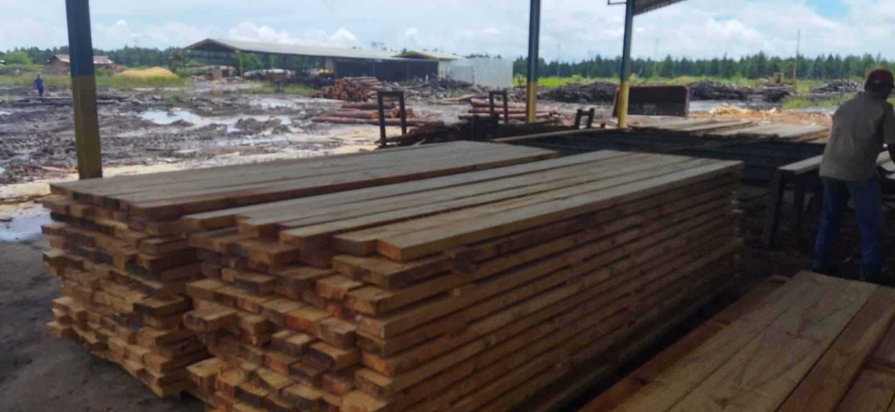
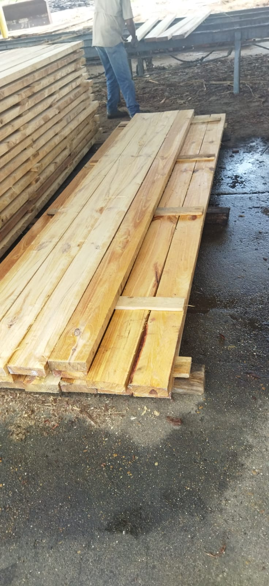
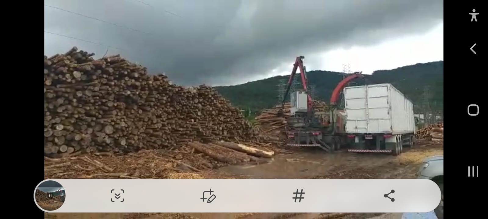
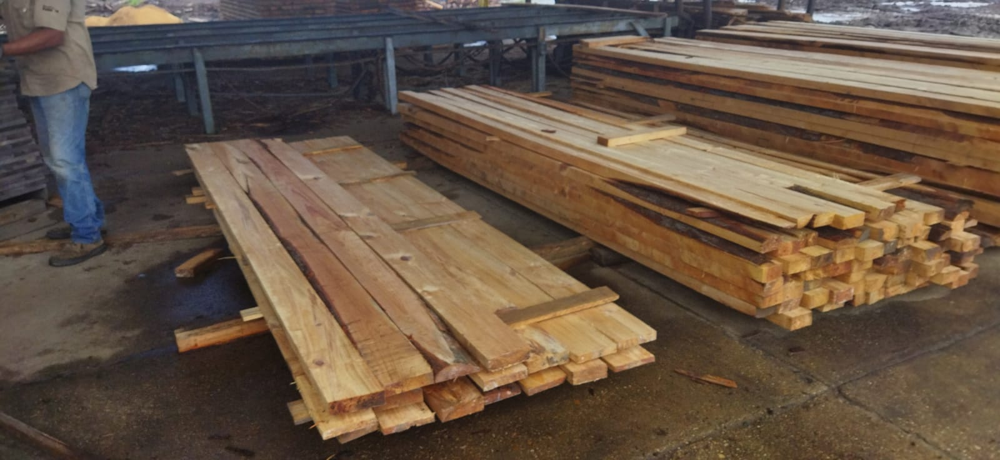
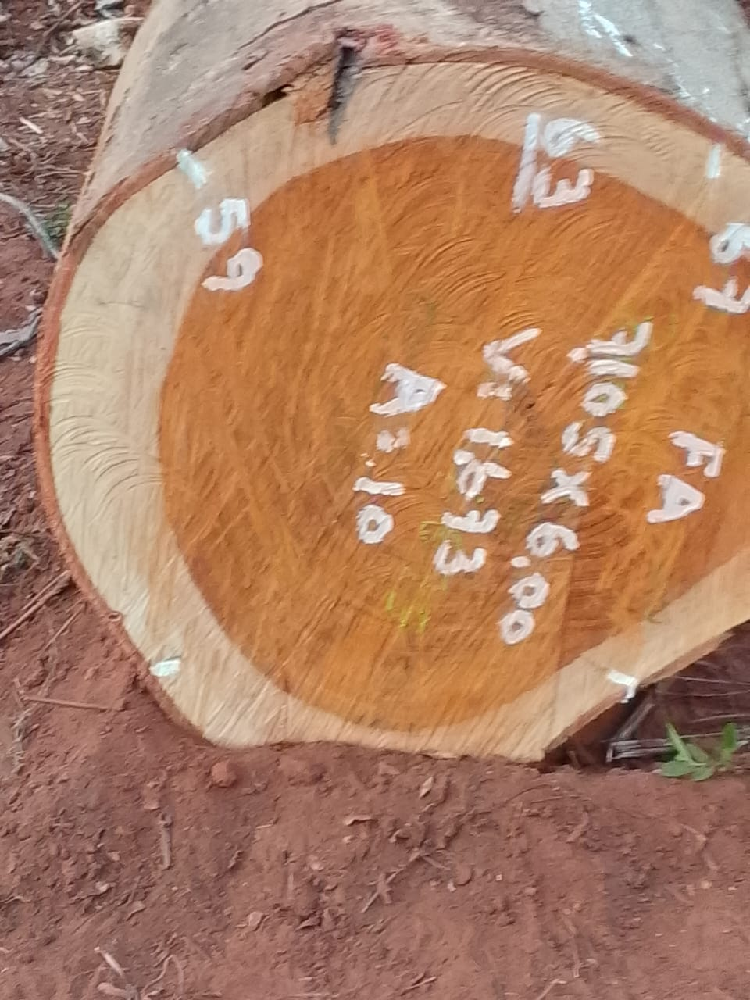
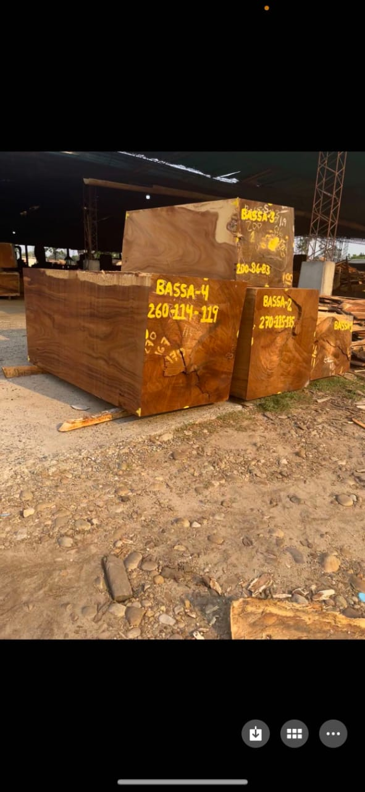

Madeira de lei direto da serraria
Comprar madeira sem acompanhamento técnico especializado costuma resultar em muita perda, empenamento e custos inflados. Fazemos a ponte entre as serrarias sul-americanas e os compradores da América do Norte para garantir integridade estrutural e o máximo aproveitamento.
Madeira certa para cada uso
Cada obra exige valores específicos de dureza Janka, resistência à flexão (MOR) e resistência natural ao apodrecimento. Ligamos os requisitos do seu projeto à espécie de madeira de lei sul-americana exata que atende às especificações, sem estourar o orçamento.
Sem custos de intermediários
A importação tradicional de madeira passa por vários corretores, importadores e distribuidores regionais antes de chegar ao seu pátio. Negociamos o preço por contêiner direto com serrarias parceiras e cortamos as margens intermediárias em até 30%.
Controle de qualidade rigoroso
Nossa equipe faz inspeções presenciais antes do carregamento do contêiner. Verificamos os limites de umidade, a conformidade com a classificação, as dimensões exatas das tábuas e a secagem correta em estufa.
Como funciona nosso fornecimento
Das especificações estruturais iniciais até a entrega no pátio, nossa gestão de ponta a ponta mantém seus projetos abastecidos e dentro do orçamento.
Consultoria do projeto
Analisamos os requisitos da obra, as cargas estruturais, a exposição ao clima e os objetivos estéticos para definir o perfil ideal de madeira.
Escolha direta da serraria
Negociamos o fornecimento por contêiner direto com serrarias sul-americanas certificadas, garantindo descontos por volume e classificação rigorosa.
Controle de qualidade no local
Antes do carregamento, cada lote passa por inspeção presencial de umidade, integridade do miolo, esquadro dos cortes e conformidade com o manejo sustentável.
Logística e entrega no pátio
Cuidamos de todo o desembaraço aduaneiro, das tarifas portuárias e do transporte por caminhão direto até sua obra ou centro de distribuição regional.
Galeria de inspeções e estoque
Um olhar sobre nossas operações nas serrarias sul-americanas, as inspeções da madeira e a preparação dos contêineres.










